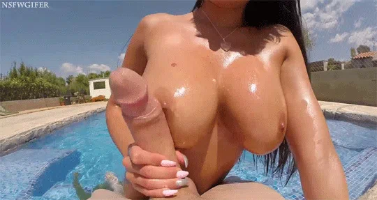

DICKSLAPATIT
Providing an alternative to the garbage that is TF2 casual matchmaking.
The bots are outta control, the vote system sucks, and there's nothing to disincentivize the losers cheaters.
Seriously Valve, what happened? Many people still play and love this game. You should be ashamed of yourselves.
Servers
Our servers are meant to mimic TF2's casual matchmaking mode, minus the bots and cheaters. All servers are completely vanilla and run the same Valve map rotations as the equivalent casual mode.
- Attack/Defend - 16 Slot - 23.127.70.148:27015
More to come!